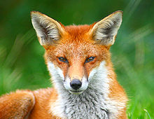

Fox

Fox is common name for many species
of carnivorous mammals belonging to the
canidae famili.
Foxes are small to
medium-sized canids (slightly smaller than
the median-sized domestic dog),
characterized by possessing a long narrow
snout, and a bushy tail (or brush).
Members of about 37 species are referred
to as foxes, of which only 12 species actually
belong to the Vulpes genus of 'true foxes'.
By far the most common and widespread species
of fox is the red fox (Vulpes vulpes), although
various species are found on almost every continent.
The presence of fox-like carnivores all over the
globe has led to their appearance in both popular
culture and folklore in many cultures around the
world (see also Foxes in culture). The gray fox is
one of only two canine species known to climb trees;
the other is the raccoon dog.